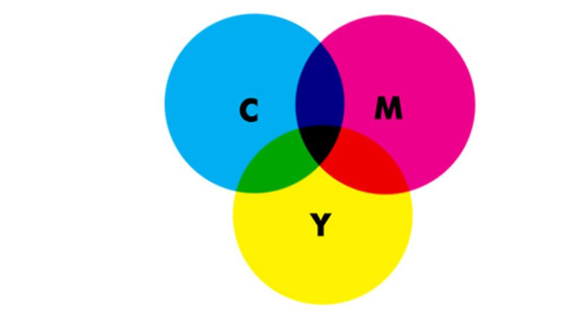

Color Systems: CYMK vs RGB
There are two primary color systems – methods by which color is reproduced: additive and subtractive (also known as reflective). We use both on a daily basis – screens use additive color to generate all the colors you see, while books use subtractive color for their front covers.

RGB (red, green, blue) is used digitally.
CYMK (cyan, yellow, magenta, keyline or black) is used for print.